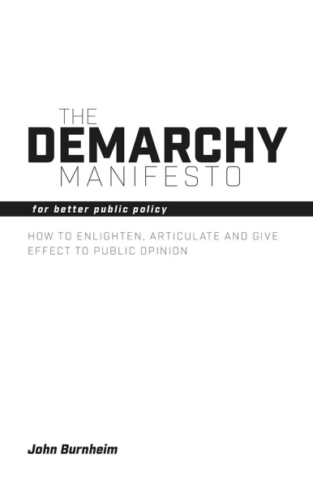

Another post from John Burnheim who wrote this following up on having received some questions from some Spaniards. (Reminding me of the title of John Lennon's book, or perhaps it was just a joke of his somewhere: A Spaniard in the works) NGDemarchy is not a comprehensive plan for reshaping existing public institutions in the ordinary course of social change. Most institutions change sometimes for good reasons and sometimes for worse. All states are pressed towards privatising public institutions because the electorate demands more from them, but is also clamouring for relief from taxation. Privatised institutions are often capable of good performance in the short run but fall into inadequacy as they pay more and more attention to profits, try to rid themselves of obligations and resist the attempts of politicians and activists to penalise them for causes that have popular appeal. The demarchal remedy for this problem is to make these institutions subject to rigorous but impartial audition and review. That move should be initiated in most cases by specific forums in each case that identifies the procedures and objectives in existing institutions and invites proposals to remedy them. I would suggest that in each case these proposals should be assessed and authorised by citizen juries comprising the main groups with positive or negative interests in the results of what the particular proposal is likely to affect substantially. Once such an institution is chosen it would be required to submit a professional auditor, that would assess the efficiency of the institution in bringing about the improvements it proposed. The audit would be examined by a citizen jury like that which authorised the privatised institution. In the beginning such privatisation would need the support of an existing state and probably in a very small scale such as a local train network. However, to the extent that it was successful it would be attractive to cashstrapped governments and to people who want to have an active representation on the choices these bodies make. At the other end of the spectrum lies Google, which makes available an extraordinary range of public goods to people all over the world, while making very large profits from advertising and from selling information. State powers have little capacity to regulate Google but there is considerable fear in many circles that Google may grow increasingly authoritarian and rapacious. It would be in Google’s interest to publish audited accounts of what it Is doing and have its choices open to scrutiny by impartial juries. Similar considerations apply to firms like banks, insurance companies and any body that depends on its reputation for quality of service. Particularly in the USA people often think that democracy and its competitors are to be judged by the degree of independence that people have from dependence on each other and the power of individuals to choose whatever they desire. In a modern science-based highly technical form of life, such visions are dangerous because they are not guided by available knowledge. It is very important that people face objectively the consequences of the real circumstances in which we find ourselves. We are often in the position of having to depend on scientists to tell us what we must do in some important matter even when we do not want to hear it. Much of the scientific knowledge available to us poses problems that have no reliable answer. So very often we cannot know what is the best course of action. More fundamentally, we differ about what is worth trying, or what is a good way to explore and test competing problems. I would argue that the echo system model of society can help us here. Faced with the complexities of various systems, all that nature can do is look to limited adaptations as each element of the system reacts to the others. In nature each acts blindly. We can act with design. But it is all a gamble. We must be well organised but also flexible enough to act successfully in such a disorganised context. What would remain of states as we know them if as much as possible of the provision of public goods was handed over to demarchic bodies? I think that two basic functions would remain: criminal law definition and enforcement, and the collection of funds to be distributed to institutions that could not raise enough money to meet their needs and to individuals to cover their basic needs. On the last point my view is that all land and natural resources should be entrusted progressively to the human population and leased to individuals and organisations. This would provide two kinds of role: the provision of various public funds to cover a minimum income to all and the needs of public institutions. These bodies would be bound to preserve the system, not exploit it. They would be relatively small, though often international, particularly where consumption of resources is involved. We might start by using trustees for some specific factors in fuels and other contributions to global warming and pollution. Such bodies must be very narrowly defined and have advantages of some sort for most of the users of the resource in question. They will fail if they are seen as a program for universal justice rather than as a particular agreement that solves a few problems in a pragmatic way. There are already many bodies of limited scope that regulate most entitlements in travel, trade and the allocation of radio waves. These are mostly not adequately audited but rely on the professional integrity of their offices. It would be useful to subject them to juries of a demarchic sort, avoiding the threat of the UN bureaucracy and over reliance on experts.
Thanks John Burnheim, and NG for posting. (clubtroppodillians - any comments? Or letting rip elsewhwere?).
Yes, "They will fail if they are seen as a program for universal justice rather than as a particular agreement that solves a few problems in a pragmatic way."
...
"It would be useful to subject them to juries of a demarchic sort, avoiding the threat of the UN bureaucracy and over reliance on experts."
Where do I sign up to be on Demarchy Duty?
JB said "I would argue that the echo system model of society can help us here."
Is this a good example. Others?
"Project ECHO is a guided practice model that exponentially increases access to best-practice care and reduces health disparities, through hub-and-spoke knowledge sharing networks. Online, interactive case discussions provide a platform for collaborative learning by primary care clinicians, educators, and social care providers, to empower providers to practice at the top of their scope."
https://www.childrens.health.qld.gov.au/chq/health-professionals/integrated-care/project-echo/
Project ECHO Introductory Video
Children's Health Queensland
https://vimeo.com/224895333
****
The Demarchy Manifesto
For Better Public Policy
By John Burnheim
...
"The Demarchy Manifesto exploits the possibilities of modern communications to give a new role and focus to public discussion. It proposes taking the formulation of public policy out of the hands of political parties and putting it into the hands of those most strongly affected by particular issues. The aim is to tell the politicians what we want, after serious and focused, open discussion. Burnheim explains why this needs to be done and how it can be achieved through voluntary means without constitutional change."...
https://sydneyuniversitypress.com.au/products/82939